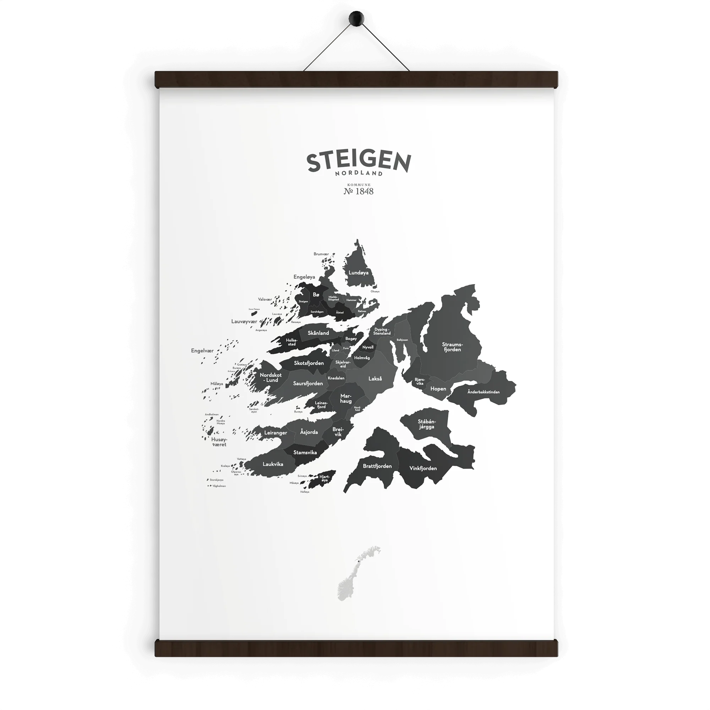

Befolkning 1.1.2026
2 679
+172 personer siden 2015 (+6,9%)
+6,9%
Steigen Kommune · befolkning og samfunn 2015-2050

Geografisk oversikt
Klikk på et kafelt for å vise et tematisk lag på kartet. Fargeskalaen representerer min/max-verdiene per krets innenfor hver kategori.

Aldersstruktur
Hver fjerde innbygger er 67 år eller eldre. Andelen barn synker, andelen seniorer øker — spesielt i gruppen 80+, som vokser raskere enn arbeidsstyrken.
Prognose 2025-2050
SSBs hovedalternativ: total befolkning +6,8% til 2050, mens 80+ vokser med +77,4%. Arbeidsstyrken (18-66) er praktisk talt flat — kjernen i det fremtidige utgiftspresset.
Konsekvens: helse og omsorg må skalere opp samtidig som skattegrunnlaget holdes flatt. Tiltak må starte før 2030 for å unngå strukturell ubalanse.
Innvandring
16,8% av Steigens befolkning er innvandrere eller barn av innvandrere — under Norges 21,8%. Andelen vestlige innvandrere er på linje med landet, mens ikke-vestlige er klart lavere.
Arbeid og pendling
22,6% av sysselsatte arbeider i jordbruk, skog og fiske — mot ca 2% i Norge. Sammen med helse og omsorg står de to næringene for over halve arbeidsstyrken.
Utdanning
26,6% av Steigens innbyggere har høyere utdanning, mot 37,9% i Norge. Forskjellen mellom kjønnene er stor: 19,3% av menn vs 34,3% av kvinner.
Inntekter
Lavere kapitalinntekter, lavere lønninger, færre høytutdannede stillinger. Skattesystemet utligner deler av forskjellen — etter skatt blir gapet mindre.
Husholdninger
Bare 197 husholdninger har barn 0-17 år (15,2%). Over halvparten av all aktivitet i kommunen skjer i én- eller topersonshushold.
Fruktbarhet og naturlig vekst
Nordlands TFR var 1,42 i 2024 — godt under reproduksjonsnivået på 2,1. Steigen har hatt negativ naturlig vekst hvert år siden 2014.
Strukturelle utfordringer
Økonomiske implikasjoner
Nøkkeltallene under binder befolkning, bosetting, inntekt og arbeidsmarked til kommunens kostnadsnivå og tjenestebehov.
Kildemateriale
Trekk per 29. april 2026 · status 1.1.2026 der tilgjengelig.